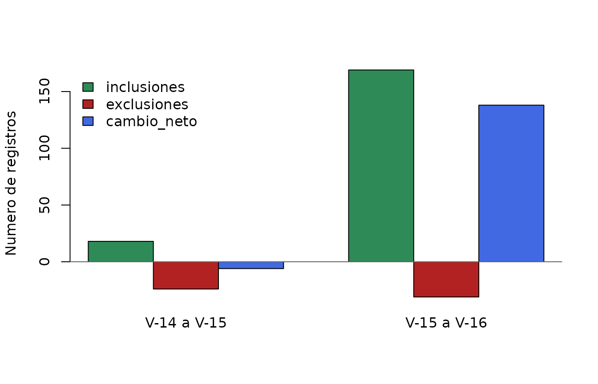

Cambios entre versiones de la base de plantas endemicas del Peru
ppendemic
Source:vignettes/cambios-entre-versiones.Rmd
cambios-entre-versiones.RmdObjetivo
Las tablas ppendemic_tab14, ppendemic_tab15
y ppendemic_tab16 representan extracciones sucesivas de
WCVP. Compararlas permite identificar:
- nombres que permanecen entre versiones;
- posibles inclusiones y exclusiones;
- correcciones ortograficas o de terminacion;
- cambios de rango infraespecifico; y
- posibles transferencias entre generos.
Una inclusion o exclusion observada no implica necesariamente que una especie haya sido descubierta o dejado de ser endemica. Tambien puede reflejar cambios taxonomicos, nomenclaturales o de los criterios de distribucion usados por WCVP. Por eso, esta viñeta distingue los cambios observados de su posible interpretacion.
Funciones para comparar versiones
La unidad de comparacion es taxon_name. Los nombres
presentes solo en la version nueva son inclusiones observadas y los
presentes solo en la version anterior son exclusiones observadas.
Para detectar posibles reemplazos se calcula una puntuacion conservadora entre cada nombre retirado y cada nombre añadido. La puntuacion combina similitud textual y coincidencias en epitetos, autoria, familia y año de publicacion. Estos vinculos son candidatos para revision, no sinonimias confirmadas.
candidate_replacements <- function(removed, added) {
if (nrow(removed) == 0L || nrow(added) == 0L) {
return(tibble::tibble())
}
same_val <- function(x, y) {
!is.na(x) & !is.na(y) & x != "" & y != "" & x == y
}
name_sim <- function(x, y) {
distance <- diag(adist(tolower(x), tolower(y)))
lengths <- pmax(nchar(x), nchar(y))
1 - distance / lengths
}
pairs <- dplyr::cross_join(
removed %>% dplyr::rename_with(~ paste0(.x, "_old")),
added %>% dplyr::rename_with(~ paste0(.x, "_new"))
)
candidates <- pairs %>%
dplyr::mutate(
similarity = name_sim(taxon_name_old, taxon_name_new),
same_species = same_val(Species_old, Species_new),
same_infraspecies = same_val(infraspecies_old, infraspecies_new),
same_author = same_val(taxon_authors_old, taxon_authors_new),
same_family = same_val(family_old, family_new),
same_year = same_val(year_actual_old, year_actual_new),
score = 0.40 * similarity +
0.25 * same_species +
0.10 * same_infraspecies +
0.15 * same_author +
0.05 * same_family +
0.05 * same_year
) %>%
dplyr::filter(score >= 0.50)
if (nrow(candidates) == 0L) {
return(tibble::tibble())
}
candidates %>%
dplyr::mutate(
interpretacion = dplyr::case_when(
same_species & same_infraspecies & coalesce(infraspecific_rank_old != infraspecific_rank_new, FALSE) ~ "Posible cambio de rango",
same_species & coalesce(Genus_old != Genus_new, FALSE) ~ "Posible transferencia de genero",
similarity >= 0.85 & (same_author | same_year) ~ "Posible correccion ortografica",
TRUE ~ "Posible reemplazo taxonomico"
),
puntuacion = round(score, 3)
) %>%
dplyr::select(
exclusion_observada = taxon_name_old,
inclusion_observada = taxon_name_new,
familia = family_new,
interpretacion,
puntuacion
) %>%
dplyr::arrange(dplyr::desc(puntuacion))
}
compare_versions <- function(old, new) {
removed <- dplyr::anti_join(old, new, by = "taxon_name")
added <- dplyr::anti_join(new, old, by = "taxon_name")
candidates <- candidate_replacements(removed, added)
linked_removed <- unique(candidates$exclusion_observada)
linked_added <- unique(candidates$inclusion_observada)
list(
summary = tibble::tibble(
version_anterior = unique(old$version),
version_nueva = unique(new$version),
registros_anteriores = nrow(old),
registros_nuevos = nrow(new),
inclusiones_observadas = nrow(added),
exclusiones_observadas = nrow(removed),
cambio_neto = registros_nuevos - registros_anteriores,
posibles_reemplazos = nrow(candidates)
),
candidates = candidates,
probable_inclusions = added %>%
dplyr::filter(!taxon_name %in% linked_added) %>%
dplyr::select(taxon_name, family, year_actual),
probable_exclusions = removed %>%
dplyr::filter(!taxon_name %in% linked_removed) %>%
dplyr::select(taxon_name, family, year_actual)
)
}
comparison_14_15 <- compare_versions(ppendemic_tab14, ppendemic_tab15)
comparison_15_16 <- compare_versions(ppendemic_tab15, ppendemic_tab16)Magnitud de los cambios
change_summary <- dplyr::bind_rows(
comparison_14_15$summary,
comparison_15_16$summary
)
knitr::kable(
change_summary,
caption = "Cambios observados y posibles reemplazos entre versiones."
)| version_anterior | version_nueva | registros_anteriores | registros_nuevos | inclusiones_observadas | exclusiones_observadas | cambio_neto | posibles_reemplazos |
|---|---|---|---|---|---|---|---|
| V-14 | V-15 | 7898 | 7892 | 18 | 24 | -6 | 8 |
| V-15 | V-16 | 7892 | 8030 | 169 | 31 | 138 | 14 |
El cambio neto debe interpretarse junto con las inclusiones y exclusiones brutas. Por ejemplo, una correccion ortografica genera simultaneamente una salida y una entrada aunque represente al mismo taxon.
plot_values <- rbind(
inclusiones = change_summary$inclusiones_observadas,
exclusiones = -change_summary$exclusiones_observadas,
cambio_neto = change_summary$cambio_neto
)
barplot(
plot_values,
beside = TRUE,
names.arg = paste(
change_summary$version_anterior,
change_summary$version_nueva,
sep = " a "
),
col = c("#2E8B57", "#B22222", "#4169E1"),
ylab = "Numero de registros",
legend.text = rownames(plot_values),
args.legend = list(x = "topleft", bty = "n")
)
abline(h = 0, col = "grey40")
Posibles correcciones y cambios taxonomicos
Los siguientes pares no deben contarse automaticamente como nuevas especies o perdidas de endemicidad. Comparten suficiente informacion para considerarlos posibles reemplazos entre versiones.
knitr::kable(
comparison_14_15$candidates,
caption = "Posibles reemplazos entre V-14 y V-15."
)| exclusion_observada | inclusion_observada | familia | interpretacion | puntuacion |
|---|---|---|---|---|
| Lobivia backebergii subsp. wrightiana | Echinopsis backebergii subsp. wrightiana | Cactaceae | Posible transferencia de genero | 0.720 |
| Lobivia maximiliana subsp. westii | Echinopsis maximiliana subsp. westii | Cactaceae | Posible transferencia de genero | 0.711 |
| Pinguicula rosmariae | Pinguicula rosmarieae | Lentibulariaceae | Posible correccion ortografica | 0.631 |
| Gentianella waygecha | Gentianella wayqecha | Gentianaceae | Posible correccion ortografica | 0.630 |
| Lobivia hertrichiana | Echinopsis hertrichiana | Cactaceae | Posible transferencia de genero | 0.561 |
| Lobivia tegeleriana | Echinopsis tegeleriana | Cactaceae | Posible transferencia de genero | 0.555 |
| Soehrensia sandiensis | Echinopsis sandiensis | Cactaceae | Posible transferencia de genero | 0.548 |
| Lobivia pampana | Echinopsis pampana | Cactaceae | Posible transferencia de genero | 0.522 |
knitr::kable(
comparison_15_16$candidates,
caption = "Posibles reemplazos entre V-15 y V-16."
)| exclusion_observada | inclusion_observada | familia | interpretacion | puntuacion |
|---|---|---|---|---|
| Peperomia nivalis var. nivalis | Peperomia nivalis f. nivalis | Piperaceae | Posible cambio de rango | 0.760 |
| Senecio danal | Senecio danai | Asteraceae | Posible correccion ortografica | 0.619 |
| Eudema chacasensis | Eudema chacasense | Brassicaceae | Posible correccion ortografica | 0.606 |
| Tovomita chachapoyasensis | Clusia chachapoyasensis | Clusiaceae | Posible transferencia de genero | 0.604 |
| Eudema cuscoensis | Eudema cuscoense | Brassicaceae | Posible correccion ortografica | 0.603 |
| Eudema peruviana | Eudema peruvianum | Brassicaceae | Posible correccion ortografica | 0.603 |
| Eudema limensis | Eudema limense | Brassicaceae | Posible correccion ortografica | 0.597 |
| Eudema incurva | Eudema incurvum | Brassicaceae | Posible correccion ortografica | 0.597 |
| Peperomia nivalis var. compacta | Peperomia nivalis f. nivalis | Piperaceae | Posible reemplazo taxonomico | 0.571 |
| Peperomia nivalis var. sanmarcensis | Peperomia nivalis f. nivalis | Piperaceae | Posible reemplazo taxonomico | 0.563 |
| Peperomia nivalis var. lepadiphylla | Peperomia nivalis f. nivalis | Piperaceae | Posible reemplazo taxonomico | 0.551 |
| Tessmanniacanthus chlamydocardioides | Justicia chlamydocardioides | Acanthaceae | Posible transferencia de genero | 0.544 |
| Cuatrecasanthus sandemanii | Critoniopsis sandemanii | Asteraceae | Posible transferencia de genero | 0.515 |
| Hibiscus chancoae | Sabdariffa chancoae | Malvaceae | Posible transferencia de genero | 0.511 |
Entre los patrones detectables se encuentran:
- cambios de terminacion, como
Eudema chacasensisaEudema chacasense; - correcciones ortograficas, como
Senecio danalaSenecio danai; - cambios de rango, como
Peperomia nivalis var. nivalisaPeperomia nivalis f. nivalis; y - posibles transferencias de genero, como especies de
Lobiviaque aparecen posteriormente bajoEchinopsis.
Estos casos requieren validacion contra sinonimos, identificadores taxonomicos estables o la historia nomenclatural de WCVP.
Posibles inclusiones
Despues de retirar los candidatos a reemplazo, los nombres restantes son las inclusiones con mayor probabilidad de representar incorporaciones a la lista. La version V-16 concentra numerosas inclusiones publicadas recientemente.
inclusions_15_16 <- comparison_15_16$probable_inclusions
inclusion_families <- inclusions_15_16 %>%
dplyr::count(family, name = "posibles_inclusiones") %>%
dplyr::arrange(dplyr::desc(posibles_inclusiones)) %>%
dplyr::slice_head(n = 15) %>%
dplyr::rename(familia = family)
knitr::kable(
inclusion_families,
caption = "Familias con mas posibles inclusiones entre V-15 y V-16."
)| familia | posibles_inclusiones |
|---|---|
| Acanthaceae | 28 |
| Araceae | 28 |
| Piperaceae | 22 |
| Orchidaceae | 17 |
| Passifloraceae | 9 |
| Bromeliaceae | 6 |
| Asteraceae | 5 |
| Malvaceae | 5 |
| Gesneriaceae | 4 |
| Annonaceae | 2 |
| Crassulaceae | 2 |
| Lauraceae | 2 |
| Moraceae | 2 |
| Poaceae | 2 |
| Solanaceae | 2 |
recent_inclusions <- inclusions_15_16 %>%
dplyr::filter(!is.na(year_actual), year_actual >= 2024) %>%
dplyr::arrange(dplyr::desc(year_actual)) %>%
dplyr::slice_head(n = 25)
knitr::kable(
recent_inclusions,
caption = "Ejemplos de posibles inclusiones publicadas desde 2024."
)| taxon_name | family | year_actual |
|---|---|---|
| Anthurium aldavei | Araceae | 2025 |
| Aristolochia guillermoi | Aristolochiaceae | 2025 |
| Gynoxys yasgolgensis | Asteraceae | 2025 |
| Justicia huallagensis | Acanthaceae | 2025 |
| Justicia oxapampensis | Acanthaceae | 2025 |
| Anthurium castilloae | Araceae | 2025 |
| Justicia rojasiae | Acanthaceae | 2025 |
| Agarista eugeniifolia | Ericaceae | 2025 |
| Anthurium divisoriense | Araceae | 2025 |
| Aphelandra floribunda | Acanthaceae | 2025 |
| Ayapana sprucei | Asteraceae | 2025 |
| Justicia werffii | Acanthaceae | 2025 |
| Justicia schunkei | Acanthaceae | 2025 |
| Justicia spathuliformis | Acanthaceae | 2025 |
| Justicia cajamarcensis | Acanthaceae | 2025 |
| Justicia lallanii | Acanthaceae | 2025 |
| Jungia alba | Asteraceae | 2025 |
| Justicia lactiflora | Acanthaceae | 2025 |
| Justicia baguensis | Acanthaceae | 2025 |
| Justicia saccata | Acanthaceae | 2025 |
| Nototriche chambii | Malvaceae | 2025 |
| Aniba taftii | Lauraceae | 2025 |
| Anthurium bongarense | Araceae | 2025 |
| Anthurium sandanielense | Araceae | 2025 |
| Aphelandra calciferi | Acanthaceae | 2025 |
Posibles exclusiones
Los nombres retirados que no tienen un reemplazo candidato son posibles exclusiones. Una exclusion puede deberse a que el taxon dejo de considerarse aceptado o exclusivamente peruano, pero esa causa no puede determinarse solo con estas tablas.
exclusions_15_16 <- comparison_15_16$probable_exclusions
exclusion_families <- exclusions_15_16 %>%
dplyr::count(family, name = "posibles_exclusiones") %>%
dplyr::arrange(dplyr::desc(posibles_exclusiones)) %>%
dplyr::rename(familia = family)
knitr::kable(
exclusion_families,
caption = "Familias de las posibles exclusiones entre V-15 y V-16."
)| familia | posibles_exclusiones |
|---|---|
| Piperaceae | 6 |
| Apocynaceae | 3 |
| Orchidaceae | 2 |
| Acanthaceae | 1 |
| Aspleniaceae | 1 |
| Clusiaceae | 1 |
| Gentianaceae | 1 |
| Myristicaceae | 1 |
| Rubiaceae | 1 |
knitr::kable(
exclusions_15_16 %>% dplyr::arrange(family),
caption = "Posibles exclusiones entre V-15 y V-16."
)| taxon_name | family | year_actual |
|---|---|---|
| Dyschoriste ciliata | Acanthaceae | 1891 |
| Mandevilla polyantha | Apocynaceae | 1932 |
| Mandevilla horrida | Apocynaceae | 2007 |
| Mandevilla pristina | Apocynaceae | 2007 |
| Thelypteris rosei | Aspleniaceae | 1967 |
| Tovomita weberbaueri | Clusiaceae | 1923 |
| Gentianella poculifera | Gentianaceae | 1993 |
| Virola weberbaueri | Myristicaceae | 1926 |
| Epidendrum echinatiantherum | Orchidaceae | 2023 |
| Fernandezia pastorelliae | Orchidaceae | 2014 |
| Peperomia foliiflora | Piperaceae | 1798 |
| Peperomia cereoides var. cereoides | Piperaceae | NA |
| Peperomia cereoides var. reducta | Piperaceae | 2004 |
| Peperomia cymbifolia var. goodspeedii | Piperaceae | 2005 |
| Peperomia cymbifolia var. occidentalis | Piperaceae | 2023 |
| Peperomia cymbifolia var. cymbifolia | Piperaceae | NA |
| Exostema bicolor | Rubiaceae | 1841 |
Cambios netos por familia
El balance por familia ayuda a identificar grupos que requieren una revision prioritaria. Este balance incluye tanto cambios taxonomicos como posibles incorporaciones o exclusiones reales.
family_change <- dplyr::full_join(
ppendemic_tab15 %>% dplyr::count(family, name = "v15"),
ppendemic_tab16 %>% dplyr::count(family, name = "v16"),
by = "family"
) %>%
dplyr::mutate(
v15 = tidyr::replace_na(v15, 0L),
v16 = tidyr::replace_na(v16, 0L),
change = v16 - v15
) %>%
dplyr::arrange(dplyr::desc(abs(change)), family)
knitr::kable(
head(family_change, 20),
caption = "Mayores cambios absolutos por familia entre V-15 y V-16."
)| family | v15 | v16 | change |
|---|---|---|---|
| Araceae | 186 | 214 | 28 |
| Acanthaceae | 147 | 174 | 27 |
| Orchidaceae | 1153 | 1168 | 15 |
| Piperaceae | 667 | 680 | 13 |
| Passifloraceae | 66 | 75 | 9 |
| Bromeliaceae | 313 | 319 | 6 |
| Asteraceae | 878 | 883 | 5 |
| Malvaceae | 126 | 131 | 5 |
| Gesneriaceae | 54 | 58 | 4 |
| Annonaceae | 43 | 45 | 2 |
| Apocynaceae | 75 | 73 | -2 |
| Crassulaceae | 44 | 46 | 2 |
| Lauraceae | 89 | 91 | 2 |
| Moraceae | 5 | 7 | 2 |
| Poaceae | 131 | 133 | 2 |
| Solanaceae | 312 | 314 | 2 |
| Aristolochiaceae | 14 | 15 | 1 |
| Asparagaceae | 4 | 5 | 1 |
| Brassicaceae | 74 | 75 | 1 |
| Cactaceae | 187 | 188 | 1 |
Recomendaciones de interpretacion
- Usar
taxon_namepara describir entradas y salidas observadas. - Revisar primero los posibles reemplazos antes de comunicar descubrimientos o perdidas.
- Confirmar las posibles inclusiones y exclusiones con WCVP y sus identificadores estables.
- No interpretar una exclusion como perdida biologica o extincion.
- Reportar siempre las versiones y fechas comparadas.
El procedimiento presentado es reproducible y sirve como filtro inicial. Una evaluacion taxonomica definitiva requiere fuentes externas que documenten sinonimias, cambios de distribucion y decisiones nomenclaturales.